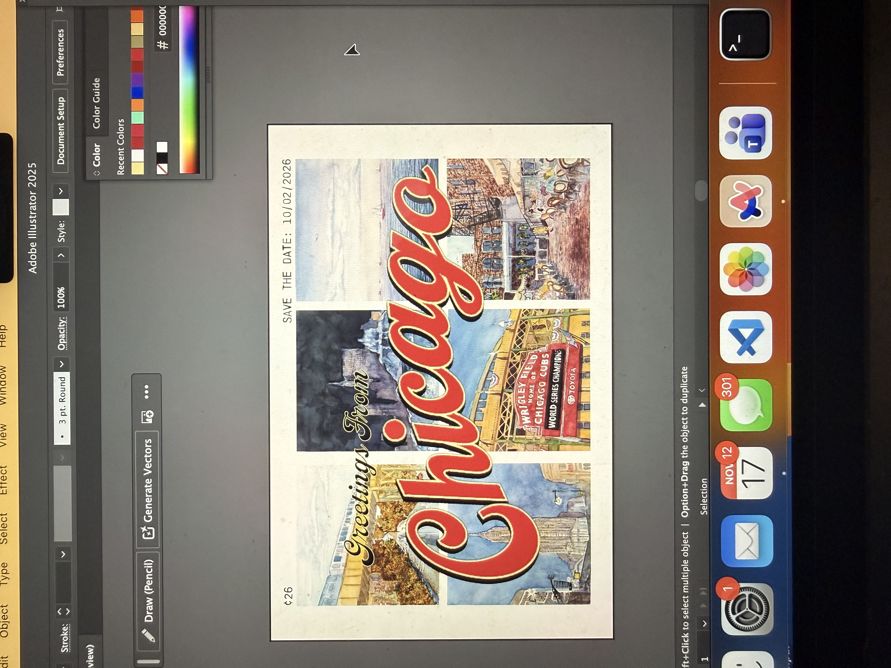
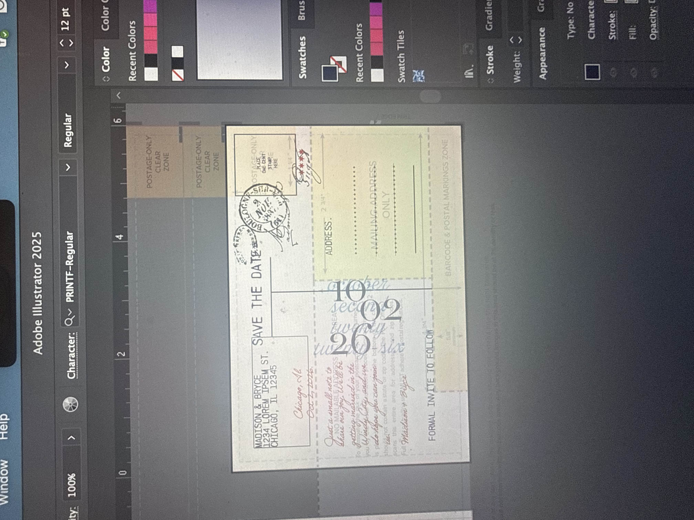

Introduction
I designed this save-the-date to push against the conventions of traditional wedding invitations.

-02.png)
I designed this save-the-date as a way to merge my illustration background with graphic design to create something warm, cohesive, and memorable. By using watercolor as the foundation of the visual system, I was able to unify multiple Chicago landscapes into a consistent palette and tone while pushing beyond predictable wedding aesthetics. I approached the project as a communication challenge first, using playful, vintage-inspired design to tell a clear, inviting story that feels personal, intentional, and distinctly handmade.
The Ask
My clients were eager to move beyond predictable wedding design.
I was asked to design a save-the-date that broke from traditional wedding design with no clear visual reference. Translating what my clients didn’t want into a cohesive direction pushed me to lead through interpretation, while balancing originality with accessibility, clarity, and real-world mailing constraints.
Drafts and Revisions
My clever concept didn’t quite feel personal enough, and challenged my creative thinking as I reworked my idea to fit their needs.

My first draft centered on the Sears Tower — a clever idea my clients initially suggested and responded well to. While the concept landed, our conversations revealed they wanted the design to feel more personal by highlighting additional elements of Chicago that held meaning for them. This feedback helped shift the project from a single visual idea into a richer, more layered story rooted in place, shaped through collaboration and communication.
I leaned into traditional mediums to bring warmth and intention into the design.
.jpg)
I painted their favorite Chicago places to make the design feel personal, cohesive, and completely one of a kind. Watercolor let me unify multiple landmarks into a shared palette and texture, turning familiar locations into a single, intentional visual story.
In these early drafts, I experimented with text placement and color to understand how illustration and typography could coexist without competing. As the composition developed, I increased contrast within the text to improve legibility while preserving the warmth of the painted elements.
I also began working with a postcard layout guide to ensure the back of the design met mailing requirements, allowing the piece to remain playful and unconventional while still functioning as a shippable postcard.

While my client really loved this version of the design, we decided with a simpler back to increase legibility and also meet postcard shipping requirements.
Final Design
The final piece felt less like an invitation and more like a keepsake.
This project taught me how much strong design relies on listening and interpretation. I solved an open-ended brief by balancing watercolor illustration, typographic contrast, and real mailing constraints to create a postcard that was both expressive and functional. It reinforced how my illustration background helps me turn ambiguity into clear, intentional graphic design.
A testiment that graphic design isn't just placing words on a file, it's about building communication and working together with clients to make a design that is truly representative of their needs.